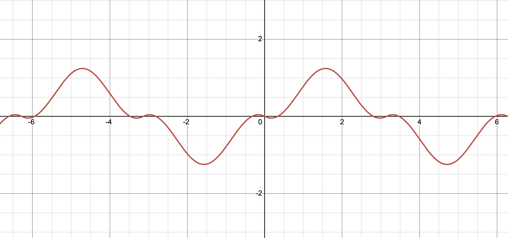

Goal: Use Fourier series to solve mass-spring systems with external forces and analyze resonance.
1. Mass-Spring Systems
Find the steady periodic solution \( x_{sp}(t) \) of each differential equation. Plot enough Fourier terms to visualize the solution.
Problem 1
where \(F(t)\) is periodic with period \(2\pi\) and

Problem 2
where \(F(t)\) is an even function with period \(4\) and
Problem 3
where \(F(t)\) is an odd function with period \(2\pi\) and
Problem 4
where \(F(t)\) is an even function with period \(4\) and
Problem 5
where \(F(t)\) is an odd function with period \(2\) and
Problem 6
where \(F(t)\) is an even function with period \(2\pi\) and
2. Pure Resonance
In each of the problems 1-6, the mass \(m\) and Hooke’s constant \(k\) for a mass–spring system are given. Determine whether or not pure resonance will occur under the influence of the given external periodic force \(F(t)\).
Problem 1
where \(F(t)\) is an odd function with period \(2\pi\) and
Problem 2
where \(F(t)\) is an odd function with period \(2\) and
Problem 3
where \(F(t)\) is an odd function with period \(2\pi\) and
Problem 4
where \(F(t)\) is an odd function with period \(2\) and
Problem 5
where \(F(t)\) is an even function with period \(2\pi\) and
Problem 6
where \(F(t)\) is an odd function with period \(2\pi\) and
Problem 7
A particular mass-spring system is modeled by:
where \( F(t) \) is an odd periodic force with period 4, whose Fourier series representation is:
Tasks:
- Find a steady-periodic solution \( x(t) \).
- Check whether pure resonance occurs.
- If no pure resonance occurs, identify the dominant term in the response.
3: Damped Mass-Spring Systems (\(c > 0\))
Steady Periodic Solution \( x_{sp}(t) \)
Denote1. Even Force
2. Odd Force
In each of the following problems, the values of \(m\), \(c\), and \(k\) for a damped mass–spring system are given. Find the steady periodic motion \(x_{sp}(t)\) of the mass under the influence of the given external force \(F(t)\). Compute the coefficients and phase angles for the first three nonzero terms in the series for \(x_{sp}(t)\).
Problem 1
\(m=1,\; c=0.1,\; k=4\), where \(F(t)\) is periodic with period \(2\pi\) and
Problem 2
\(m=2,\; c=0.1,\; k=18\), where \(F(t)\) is an odd function with period \(2\pi\) and
Problem 3
\(m=3,\; c=1,\; k=30\), where \(F(t)\) is an odd function with period \(2\) and
Problem 4
\(m=1,\; c=0.01,\; k=4\), where \(F(t)\) is an even function with period \(4\) and